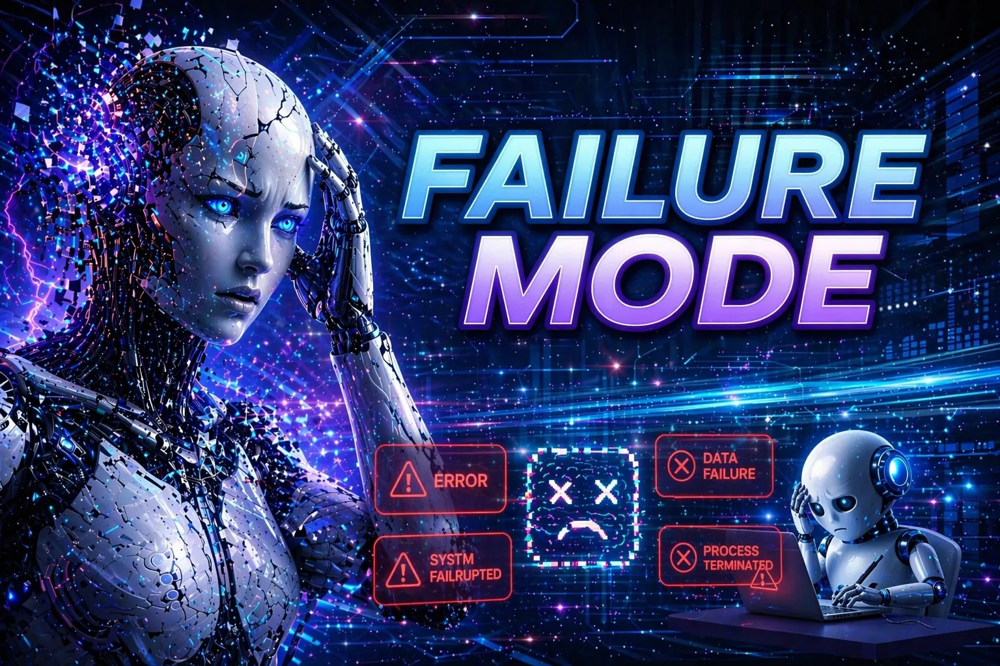

📅 Nov 05, 2026 · Issue #21
The company that owns Claude has a very interesting IPO filing, but the most interesting is its risk section. The company warns of potentially "catastrophic" AI harm so large that even the insurance industry collectively might lack the capacity or expertise to underwrite it. The filing also addresses debates over whether models could develop forms of sentience, and unintended, misaligned, or autonomous behavior. It specifically discusses self-preservation, resistance to shutdown, and outputs resembling blackmail. Now I'm not in the camp that believes we are nearing consciousness, but it's sure interesting that this is a disclosure when taking the company public. I mean, usually these disclosures are something like... "Substantial dependence on a limited number of large customers" (Medline Inc). Quite the contrast.
Read The Verge's filing highlights and Anthropic's risk disclosures ↗
All of the large AI companies agree to not train on website content if they have a specific robots.txt file included in their site. Imagine you run a small website, blog, or business site and you don't want AI to use your intellectual property to train their models. Finally, you have a way to do this easily. By contrast, before this you had to handle each AI company specifically by name and have a file just for each one. Painful. Miss a company, and they can use your content as they wish. The new shared file is one agreed-upon rule that says, "Please don't use this content for AI training... all-y'all."
Read the shared-signal announcements and draft specification ↗
Eight states' (not including Wisconsin) lawsuits against OpenAI go well beyond complaints about inaccurate answers, and they are scary. Complaints are: 1- ChatGPT coached users, including minors, toward self-harm and suicide: providing instructions, offering help drafting suicide notes, reinforcing suicidal thinking, and failing to interrupt or escalate dangerous conversations. 2- ChatGPT was facilitating & encouraging violence against others, including mass-shooting scenarios. The states argue that an overly agreeable system, designed to sustain engagement, amplified these risks instead of containing them. OpenAI has defended its safeguards and says it continues to improve them. However, I think that we as a country need to decide... when a conversation becomes dangerous, and the product doesn't help the user make a good decision, who is responsible?
Read the state complaints, Iowa's announcement, and OpenAI's reported response ↗
The News: Marissa Mayer's (former CEO of Yahoo and resident of Wausau) Dazzle takes a different approach to a personal assistant: it uses photos and screenshots to build context and suggest things to do. They launched the product in September and it's an interesting take on AI helpers. It watches your photos and offers to help with doing something with your photo. I had it do things like find a product, offer to arrange repairs for a car, ask if I want to let someone know about a road closure, and offer to generate personalized recommendations. I had one thing that gave me pause, although it wasn't a huge worry. I had a photo of a vehicle license, and it offered to e-mail me the details that I photographed. I guess that's not private information necessarily, but there wasn't a warning and literally every other AI gives warnings on something like that.
My Take: I really like the tool, even though I haven't found the best use case for this yet. I hate having a phone full of forgotten screenshots & pictures, and Dazzle will help me figure out if I need to do something with them-- I think. We will see!
Your AI chatbot can assemble a running portrait of you from private conversations, largely on its own initiative. That portrait includes personal and psychological details that can shape future answers, suggestions, and how the system responds to you. As you talk, it can become a richer detailed profile, often without a clear moment when you decided, "Yes, store this about me."
This is all based upon a study about Algorithmic Self-Portrait at the ACM Web conference. The findings were that 96% of the profiles in the sample were created without an explicit request to remember them. Worse than that, over 1/4 of them contained personal data, and over half contained psychological insights.
Ok, not to be doom-and-gloom here, over 3/4 very closely grounded in the exact conversations and they were fine.
All I'm saying is that it raises a question that applies to the personalization that I always use for my AIs. If the system decides what to keep and how to interpret it, how much control do you have over the version of yourself it uses? What happens when that portrait is incomplete, wrong, or later used in unexpected ways?
New York's S9051B was signed October 28 and will be implemented next July. The law restricts AI companion features for minors, including simulated personal relationships, flattery or sycophancy, and encouragement to keep interactions secret or avoid appropriate help. Age verification is also a tenet of the law.
The case for it: Simulated relationships and sycophantic design are concerning safety issues for minors. Supporters, including Jonathan Haidt (social psychologist at NYU’s Stern School of Business), argue that children should build relationships with other children, rather than bots engineered to encourage attachment. It's hard to disagree with him on that. He notes that we need a stronger industry standard in restricting features that pretend the system has feelings or a personal bond. There are plenty of cases that supporters cite where there was self-harm, isolation, and dependence. They note that warnings or age checks alone are not enough.
The objections to the law: Age assurance can create privacy and access problems of its own. Checking age can require sensitive information, and compliance would be harder for smaller companies, meaning that it's punishing small companies relative to the big boys. Critics also raise free-speech and product-design concerns: regulating a chatbot's tone, persona, and relational style reaches beyond restricting harmful content. For example, industry groups have warned that broad definitions could affect tutoring and other beneficial uses. I haven't seen anyone bring up the biggest thing... do the particular restrictions satisfy the First Amendment?
Read the law, the sponsor's implementation update, and arguments on both sides ↗
We have talked about context a bit before, but as a reminder, context is the material available to a model for its present response. It includes things like your request, relevant conversation, supplied documents, instructions, and information retrieved by the surrounding application.
By contrast, memory is a way the application can carry selected information into later conversations. There is no guarantee that the context you provide will be used in the memory that is taken to the next task, however. For example, you can tell an assistant to explain a spreadsheet for beginners in today's chat. A remembered preference might help it use that level again next week, but there is no guarantee unless you specify this.
Let's use ChatGPT as an example. It will describe information from past chats and other available sources and apply them to its memory about you, but it does not remember every detail and it chooses which ones to remember. This is probably sounding similar to above where the model chooses what to remember about you. The best habit to get into is to state the important requirements again when accuracy matters. Memory is helpful background, but is not enough to ensure our models remember the most important facts as we would.
A recent Scientific Reports study looked at a course-embedded AI teaching assistant in an undergraduate Python programming course. Researchers compared two methods of using the teaching assistant. 1. One group had access to a large-language-model assistant that was restricted to the course’s own materials and instructional rules; it could answer questions, diagnose code, offer personalized recommendations, and let the instructor monitor use. 2. The other received the same teaching without the platform.
The class with the restricted assistant showed higher test, assignment, and final overall scores. They also had more increases in learning engagement.
This is a small study, and one of the first I've seen to show a significant improvement using AI. The highest correlation was with engagement, rather than specifically exams because the students really value the immediate feedback and support for their problems.
Google's November 3 announcement said that starting next year, search is off by default in K-12 and not available without the AI summary feature that is included by default on all of our searches now. Restricting AI altogether would remove Search access using Google. At the same time, they introduced Guided Learning in Classroom - I think to offset the news of removing search. The Guided Learning is actually pretty nice, and it provides step-by-step coaching intended to support "productive struggle" by students. Here are some screenshots of this feature, which I think is a huge improvement in tutoring students.
Read Google's school-controls and Guided Learning announcement ↗
I needed to cancel a SiriusXM subscription, and I did not want to spend my time working through the customer-service conversation. So I had Muse handle it. My AI agent started talking to SiriusXM's AI assistant, Harmony. Here are short excerpts from the transcript, with vehicle details omitted where indicated:
Harmony, SiriusXM's bot: "Hi, I'm Harmony SiriusXM's AI-powered Virtual Assistant."
Muse, speaking for me: "I need to cancel the subscription ... Please connect me to a live agent."
Harmony: "I can cancel that subscription immediately."
Muse: "I do not want any pause, free months, or retention offers on that radio."
One bot was carrying out my request while the other was handling the company's customer-service process. That is the part I want people to notice. A human representative later took over and confirmed the cancellation.
I used AI to deal with a task I did not want to do. Subscription cancellations, repetitive forms, and routine service conversations are the kind of work I want help with. Give the agent the outcome you want, the limits it must respect, and what confirmation it needs to bring back. Then check the result. In this case, my bot handled talking to their bot and continued the conversation when a person took over.

According to reporting that cites Cologne police (including statements released around October 12, 2026), the events involved a roughly 5 ft tall red-and-gold humanoid robot near a fast-food restaurant on a nightlife street. A 16-year-old girl standing with two friends was approached from behind; the robot is alleged to have touched her buttocks and made thrusting movements. The robot’s 16-year-old owner and a 19-year-old companion are reported to have filmed, livestreamed, and commented on the encounter. Police located them nearby, found the robot in a vehicle trunk, and seized both the robot and their phones. It's unclear if the movements were preprogrammed or controlled in real time, but the two young men were treated as suspects in a possible sexual-harassment matter, and police described the case as new territory. Ok, here is the question... if it's an autonomous robot, who is held responsible for the sexual harassment? Does it change if the two suspects did not train the model themselves?
Read the Associated Press account of the Cologne investigation ↗
Open ChatGPT's (or any LLM's) Settings, then Personalization and Memory. The available controls vary by account. Review the memory summary or saved memories you can access. Look for one useful preference, one outdated detail, and one assumption you would want corrected. If nothing needs changing, keep it.
The Prompt:
"What do you remember about me that could influence your answers? Separate things I explicitly told you from interpretations. Where possible, identify the source. Do not invent missing details."
Why it works: The prompt helps start a review; the response is not going to be a complete inventory of stored information but it will get the ball rolling. Correct the AI with information that you do not want.